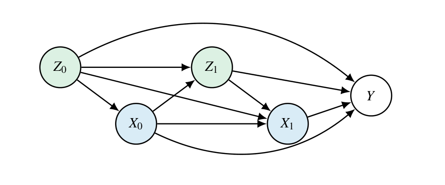
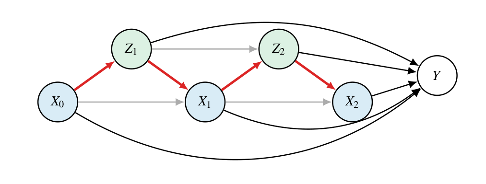
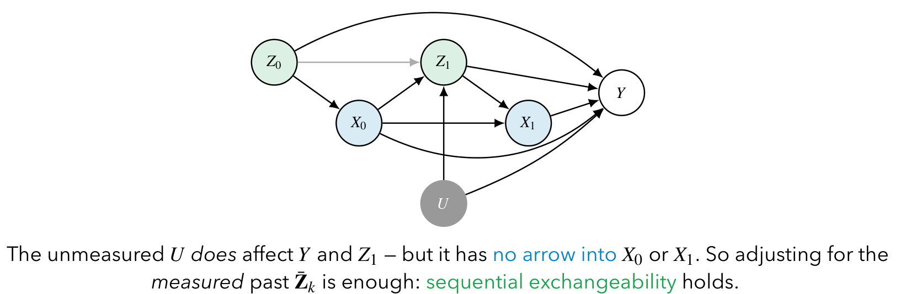
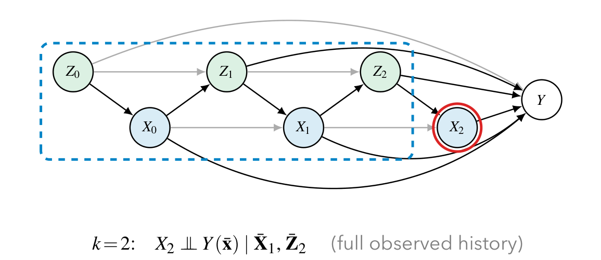
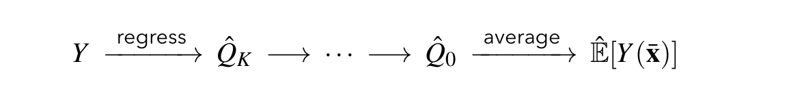
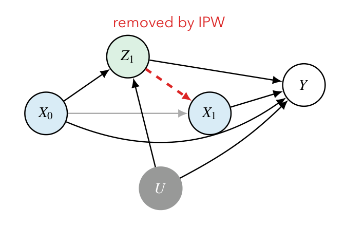
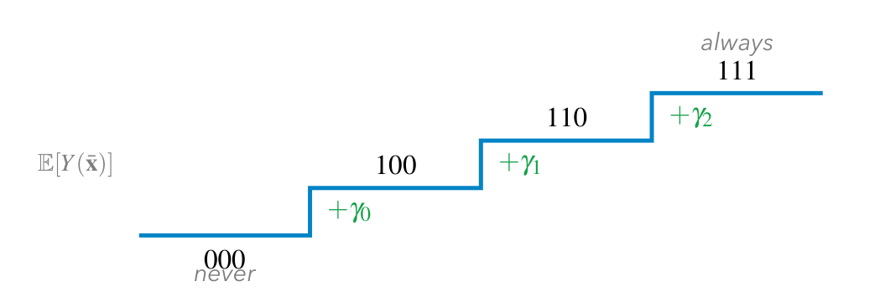
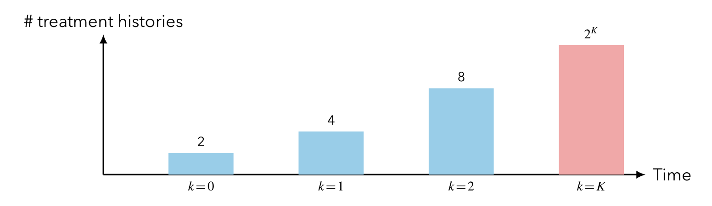
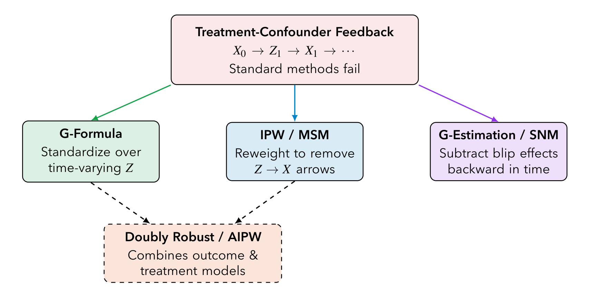

본 포스트는 서울대학교 GSDS Sanghack Lee 교수님의 Causal Inference 강의 자료(Time-Varying Treatments, Treatment-Confounder Feedback, and G-Methods)를 바탕으로, 강의를 처음 듣는 독자도 논리적 흐름을 따라갈 수 있도록 재구성한 것입니다. 원 슬라이드는 Hernán & Robins의 Causal Inference: What If 19–21장과 Naimi, Cole, Kennedy (2017)의 An introduction to g methods를 계보로 합니다.
한 줄 요약 (TL;DR)
“교란자가 이전 처치의 결과물이기도 할 때, 그것을 조정해도 조정하지 않아도 틀린다 — 조건화 대신 표준화·재가중·차감으로 우회하는 것이 g-방법이다.”
처치가 여러 시점에 걸쳐 반복되면 시점 \(k\)의 교란자 \(Z_k\)가 이전 처치 \(X_{k-1}\)의 영향을 받으면서 동시에 이후 처치 \(X_k\)를 결정하는 처치–교란자 되먹임(treatment-confounder feedback)이 발생합니다. 이때 \(Z_1\)을 조정하지 않으면 \(X_1 \to Y\)의 교란이 남고, 조정하면 \(X_0 \to Z_1 \to Y\)라는 진짜 인과 경로까지 막혀 버립니다. 회귀·층화·매칭은 조건화라는 단 하나의 도구만 갖고 있으므로 이 둘을 동시에 만족시킬 수 없습니다. Robins의 g-방법은 조건화를 포기하는 세 가지 방식 — 교란자 분포로 표준화하는 g-공식, 처치 배정을 역확률로 재가중하는 IPW/MSM, 각 결정의 효과(블립)를 차감하는 구조적 중첩 모형의 g-추정 — 으로 이 딜레마를 우회하며, 세 방법 모두 순차 교환가능성 · 일관성 · 양수성이라는 동일한 식별 가정 위에 서 있습니다.
1. 시변 처치 (Time-Varying Treatments)
1.1 한 시점 설정의 복습 (Recall: Single Time-Point Setting)
지금까지의 회차는 처치가 단 한 번 주어지는 상황을 다뤄 왔습니다. 그 세계에서 우리가 얻은 두 개의 결과를 먼저 떠올려 보겠습니다.
- 뒷문 조정(backdoor adjustment)을 통한 식별 — 3강 Identification of Causal Effects에서 보았듯, 교란자 집합 \(Z\)로 뒷문을 막으면 반사실 평균이 관측 분포의 함수로 표현됩니다.
\[ E[Y(x)] = \sum_{z} E[Y \mid X = x, Z = z]\, P(Z = z) \]
- 역확률 가중(IPW)을 통한 추정 — 11강 IPW and Its Variants에서 본 것처럼, 같은 양을 조건부 기댓값의 합이 아니라 가중 평균 하나로도 얻을 수 있습니다.
\[ E[Y(x)] = E\!\left[\frac{\mathbb{1}(X = x)\, Y}{P(X = x \mid Z)}\right] \]
여기서 자연스럽게 다음 질문이 나옵니다.
Q. 처치가 시간에 걸쳐 반복적으로 주어진다면 어떻게 될까요?
이번 회차 전체가 이 한 질문에 대한 답입니다.
1.2 시변 처치란 무엇인가 (Time-Varying Treatments)
현실의 개입 중 상당수는 한 번 결정하고 끝나는 것이 아니라 시간에 걸쳐 반복적으로 결정됩니다.
- 진료 방문마다 갱신되는 치료·투약 결정
- 단계적으로 시행되는 정책 개입
- 현재 상태를 보고 행동을 조정하는 알고리즘
한 시점 설정과 달라지는 지점은 단 하나지만, 그 하나가 모든 것을 바꿉니다.
이후의 결정은 이전의 정보가 관측된 뒤에 내려집니다.
즉 자료생성과정(data-generating process)이 이력 의존적(history-dependent)이 됩니다.
\[ \text{행동} \to \text{상태} \to \text{행동} \to \cdots \to \text{결과} \]
1.3 시변 처치의 인과 그래프 (Causal Diagrams for Time-Varying Treatments)
이 이력 의존 구조를 그래프로 그리면 다음과 같습니다.

1.4 처치–교란자 되먹임이란 (What Is Treatment-Confounder Feedback?)
앞 그림에서 본 구조에 이름을 붙일 차례입니다.
다음 두 조건이 동시에 성립할 때 처치–교란자 되먹임이 발생합니다.
- 과거 처치 \(X_{k-1}\)이 미래 교란자 \(Z_k\)에 인과적으로 영향을 준다.
- 미래 교란자 \(Z_k\)가 미래 처치 \(X_k\)에 인과적으로 영향을 준다.

표준적인 예시는 HIV 연구입니다.
\[ \text{ART}\,(X) \;\to\; \text{CD4 수치}\,(Z) \;\to\; \text{ART 결정}\,(X) \;\to\; \cdots \]
원 강의가 이 분야의 용어를 그대로 쓰고 있으므로 짧게 정리해 두겠습니다.
- ART (antiretroviral therapy): HIV 치료제. 여기서는 처치 \(X\)에 해당합니다.
- CD4 수치 / 바이러스 부하(viral load): 환자의 면역 상태를 나타내는 건강 바이오마커. 여기서는 시변 공변량 \(Z\)에 해당합니다.
ART를 투여하면 CD4 수치가 올라가고(처치 \(\to\) 교란자), 임상의는 CD4 수치를 보고 다음 ART 처방을 결정합니다(교란자 \(\to\) 처치). 되먹임의 교과서적 사례이며, g-방법이 태어난 배경이기도 합니다.
핵심은 이것입니다: 표준적인 방법들을 무너뜨리는 것은 되먹임 고리 그 자체입니다. 왜 그런지는 §1.8에서 정면으로 다루겠습니다.
1.5 처치 전략 (Treatment Strategies)
한 시점 설정에서 우리가 비교하던 대상은 “처치 \(x=1\) 대 \(x=0\)”이라는 두 개의 값이었습니다. 여러 시점으로 넘어오면 비교 대상 자체가 값에서 전략(strategy)으로 바뀝니다.
처치 전략이란 각 시점에 어떤 처치를 배정할지를 지정하는 규칙입니다.
전략은 두 종류로 나뉩니다.
- 정적 전략(static strategy) — 공변량과 무관하게 모두에게 같은 처치 열을 배정합니다.
- “항상 처치(always treat)”: \(\bar{x} = (1, 1, \dots, 1)\)
- “전혀 처치하지 않음(never treat)”: \(\bar{x} = (0, 0, \dots, 0)\)
- 동적 전략(dynamic strategy) — 시점 \(k\)의 처치가 그때까지 관측된 이력에 의존합니다.
\[ g = \big(\, g_0(Z_0),\; g_1(\bar{X}_0, Z_1),\; \dots,\; g_K(\bar{X}_{K-1}, Z_K) \,\big) \]
- 예: “CD4 수치가 500 아래로 떨어질 때에만 ART를 시작한다”
그리고 우리가 추정하려는 인과 추정 대상(causal estimand)은 서로 다른 두 전략이 낳는 반사실 평균 결과의 대비입니다.
\[ E[Y(\bar{x})] - E[Y(\bar{x}')] \]
동적 전략이 왜 중요한지를 짚어 두겠습니다. 정적 전략만 비교하는 것은 “모든 환자에게 무조건 약을 주는 세계”와 “아무에게도 주지 않는 세계”를 비교하는 것입니다. 그러나 실제 임상 지침은 거의 언제나 동적입니다 — 상태를 보고 결정하니까요. 동적 전략을 추정 대상으로 삼을 수 있다는 점이 g-방법을 단순한 기술적 보완이 아니라 의사결정 규칙을 평가하는 도구로 만듭니다.
1.6 순차 무작위 실험 (Sequentially Randomized Experiments)
한 시점 설정에서 무작위 실험이 식별의 황금 표준이었듯, 시변 설정에는 그에 대응하는 이상적 실험이 있습니다.
순차 무작위 실험이란, 각 시점 \(k\)의 처치 \(X_k\)가 과거 처치 \(\bar{X}_{k-1}\)과 과거 공변량 \(\bar{Z}_k\)에만 의존하는 확률로 무작위 배정되는 실험입니다.
이것을 관측연구의 언어로 옮기면 다음과 같습니다.
관측연구의 대응물: \((\bar{X}_{k-1}, \bar{Z}_k)\)가 주어졌을 때 \(X_k\)와 \(Y\)의 측정되지 않은 공통 원인이 없다.

1.7 순차 교환가능성 (Sequential Exchangeability)
앞 그림에서 직관적으로 이야기한 조건을 식으로 적으면 다음과 같습니다.
각 시점 \(k\)에서, 처치는 관측된 과거가 주어졌을 때 “마치 무작위 배정된 것처럼” 행동합니다.
\[ Y(\bar{x}) \;\perp\!\!\!\perp\; X_k \;\Big|\; \underbrace{\bar{X}_{k-1},\, \bar{Z}_k}_{\text{관측된 과거}}, \qquad k = 0, \dots, K \]
이 조건이 시점마다 무엇을 요구하는지 하나씩 풀어 보겠습니다.
| 시점 | 요구되는 조건부 독립 | 조건화하는 “과거” |
|---|---|---|
| \(k=0\) | \(X_0 \perp\!\!\!\perp Y(\bar{x}) \mid Z_0\) | 기저 공변량 \(Z_0\)뿐 |
| \(k=1\) | \(X_1 \perp\!\!\!\perp Y(\bar{x}) \mid X_0, \bar{Z}_1\) | 이제 \(X_0\)까지 포함 |
| \(k=2\) | \(X_2 \perp\!\!\!\perp Y(\bar{x}) \mid \bar{X}_1, \bar{Z}_2\) | 관측된 이력 전체 |

순차 교환가능성만으로는 부족하고, 한 시점 설정에서와 마찬가지로 두 가지 가정이 더 필요합니다.
- 일관성(consistency): \(\bar{X} = \bar{x}\)인 개체에 대해 \(Y(\bar{x}) = Y\). 즉 실제로 그 전략을 따른 사람의 관측 결과가 곧 그 전략 하의 반사실 결과입니다. 이것이 반사실량과 관측량을 잇는 다리입니다.
- 양수성(positivity): 모든 \(k\)에 대해 \(P(X_k \mid \bar{X}_{k-1}, \bar{Z}_k) > 0\). 즉 어떤 이력을 가진 사람이든 각 처치를 받을 확률이 0이 아니어야 합니다.
이 세 가정 — 순차 교환가능성 · 일관성 · 양수성 — 은 앞으로 등장할 세 개의 g-방법이 공통으로 딛고 서는 지반입니다. 방법이 달라도 가정은 같다는 점을 기억해 두시면 좋겠습니다.
1.8 근본적 딜레마 (The Fundamental Dilemma)
이제 이번 회차의 문제의식이 정면으로 드러나는 지점입니다. 되먹임이 있을 때 \(Z_1\)을 어떻게 다룰지 두 갈래로 갈라 보겠습니다.
| \(Z_1\)을 조정하지 않으면 | \(Z_1\)을 조정하면 | |
|---|---|---|
| \(X_1 \to Y\)의 교란 | ✗ 그대로 남는다 | ✓ 제거된다 |
| \(X_0 \to Z_1 \to Y\) 인과 경로 | ✓ 보존된다 | ✗ 과대조정으로 막혀 버린다 |
처치–교란자 되먹임이 존재할 때, 전통적 방법(회귀 · 층화 · 매칭)은 \(X_1\)에 대한 교란 제거와 \(Z_1\)을 통한 \(X_0\)의 효과 보존을 동시에 달성할 수 없습니다.
왜 동시에 할 수 없는가를 조금 더 풀어 보겠습니다. 회귀·층화·매칭은 서로 매우 달라 보이지만, 인과적으로는 모두 “조건화(conditioning)”라는 단 하나의 도구를 씁니다. 그런데 \(Z_1\)은 두 개의 신분을 동시에 갖고 있습니다.
- 교란자로서의 \(Z_1\): \(X_1 \leftarrow Z_1 \to Y\)라는 뒷문 경로를 열어 놓고 있으므로 막아야 합니다.
- 매개변수로서의 \(Z_1\): \(X_0 \to Z_1 \to Y\)라는 앞문(인과) 경로 위에 있으므로 막으면 안 됩니다.
조건화는 이 두 요구에 대해 한 번에 하나의 답만 줍니다. \(Z_1\)을 조건화 집합에 넣거나, 넣지 않거나. 그러므로 도구를 바꾸지 않는 한 출구가 없습니다.
1.9 g-방법: 해법 (G-Methods: The Solution)
Robins가 제안한 일반화 방법(generalized methods, g-methods)은 바로 이 지점에서 조건화를 포기합니다.
핵심 아이디어: 시변 교란자 \(Z_1\)을 다루되, 그것을 통과하는 인과 경로는 막지 않는다.
세 가지 갈래가 있습니다.
| 방법 | 무엇을 모형화하는가 |
|---|---|
| ① g-공식 (g-formula) | 결과 모형화(outcome modeling) |
| ② IP-가중 주변 구조 모형 (IP-weighted MSM) | 처치 모형화(treatment modeling) |
| ③ 구조적 중첩 모형의 g-추정 (g-estimation of SNM) | 효과 모형화(effect modeling) |
세 방법 모두 동일한 식별 가정(§1.7의 세 가정)에 의존한다는 점을 다시 강조해 둡니다. 셋의 차이는 식별이 아니라 추정 전략에 있습니다.
1.10 식별: 이미 알고 있는 것 (Identification: What You Already Know)
여기서 잠시 멈추고, 사실 식별 자체는 이미 배운 도구로 끝난다는 점을 확인하겠습니다.
3강에서 본 절단 인수분해(truncated factorization)를 떠올려 보십시오. \(do(x)\) 하에서는 결합분포에서 처치 메커니즘에 해당하는 인수를 제거합니다. 기저 교란자를 포함한 일반적인 시변 그래프 \((Z_0, X_0, Z_1, X_1, Y)\)에 이를 적용해 보겠습니다.
1단계 (시간 순서에 따른 인수분해). 관측 결합분포는 시간 순서대로 다음과 같이 인수분해됩니다.
\[ P(z_0)\cdot P(x_0 \mid z_0)\cdot P(z_1 \mid x_0, z_0)\cdot P(x_1 \mid z_1, x_0, z_0)\cdot P(y \mid x_1, z_1, x_0, z_0) \]
2단계 (처치 메커니즘 제거). \(do(x_0)\)는 \(P(x_0 \mid z_0)\)를, \(do(x_1)\)은 \(P(x_1 \mid z_1, x_0, z_0)\)를 각각 지웁니다. 남는 인수는 \(P(z_0)\), \(P(z_1 \mid x_0, z_0)\), \(P(y \mid \cdot)\) 셋입니다.
3단계 (결과의 기댓값). 남은 인수들로 \(Y\)의 기댓값을 계산하면
\[ E[Y(x_0, x_1)] = \sum_{z_0, z_1} E[Y \mid x_0, z_0, x_1, z_1]\; P(z_1 \mid x_0, z_0)\; P(z_0) \]
를 얻습니다. 이것이 바로 g-공식이며, 요컨대 시간 순서로 적은 절단 인수분해에 지나지 않습니다. 그리고 순차 교환가능성은 남은 각 인수가 관측 자료로부터 추정 가능함을 보장합니다.
식별식 자체는 3강의 재활용입니다. 이번 회차가 새로 다루는 것은 두 가지입니다.
- 왜 처치–교란자 되먹임이 표준적인 추정 방법들을 무너뜨리는가 (§1.8에서 이미 본 딜레마)
- 추정 전략 — 가중치의 순차적 곱으로서의 IPW, 주변 구조 모형(MSM), 구조적 중첩 모형(SNM)
즉 이번 회차의 무게중심은 식별이 아니라 추정에 있습니다.
2. g-공식 (G-Formula)
2.1 g-공식의 아이디어 (The G-Formula: Idea)
이하에서는 표기를 가볍게 하기 위해 기저 교란자가 없는 두 시점 사례(\(Z_0 = \emptyset\), 따라서 \(X_0\)는 주변적으로(marginally) 교환가능)를 씁니다. \(z_0\)를 떼어내고 시변 교란자 \(Z_1\)만 추적하는 것이지요. 일반형은 \(\prod_k P(z_k \mid \text{과거})\)를 그대로 유지합니다.
- 핵심 통찰: \(Z_1\)을 조건화해서 교란을 제거하는 대신, 과거 처치가 주어졌을 때의 \(Z_1\)의 분포로 표준화(standardize) — 즉 주변화(marginalize) — 한다.
- 두 시점의 경우:
\[ E[Y(x_0, x_1)] = \sum_{z_1} E[Y \mid X_0 = x_0,\, Z_1 = z_1,\, X_1 = x_1] \cdot P(Z_1 = z_1 \mid X_0 = x_0) \]
- 결정적인 것은 가중치입니다. \(Z_1\)의 주변분포 \(P(z_1)\)가 아니라 \(X_0\)가 주어진 조건부 분포 \(P(z_1 \mid x_0)\)로 가중합니다.
바로 이 한 글자가 §1.8의 딜레마를 해소합니다.
- 조건화는 \(Z_1\)의 값을 고정시킵니다. 그러면 \(X_0\)가 \(Z_1\)을 움직여서 \(Y\)에 미치던 효과가 통째로 사라집니다.
- 표준화는 \(Z_1\)을 고정하지 않고, \(X_0 = x_0\)가 실제로 유도했을 \(Z_1\)의 분포로 평균을 냅니다. \(x_0\)를 바꾸면 \(P(z_1 \mid x_0)\)도 따라 바뀌므로, \(X_0 \to Z_1 \to Y\) 경로가 그대로 살아 있습니다.
동시에 안쪽의 \(E[Y \mid x_0, z_1, x_1]\)은 \(z_1\)을 조건에 넣고 있으므로 \(X_1 \to Y\)의 교란은 제거됩니다. 막아야 할 것은 안쪽에서 조건화로 막고, 살려야 할 것은 바깥쪽에서 조건부 분포로 살린다 — 이것이 g-공식의 설계입니다.
2.2 g-공식의 유도 (G-Formula: Derivation)
앞의 식을 단계별로 유도해 보겠습니다. (밀도와 확률을 뜻하는 \(f\)와 \(P\)는 혼용합니다.)
1단계 (시간 순서 인수분해). 관측 결합분포는 시간 순서대로 다음과 같이 쪼개집니다.
\[ P(y, x_1, z_1, x_0) = P(y \mid x_1, z_1, x_0)\; \underbrace{P(x_1 \mid z_1, x_0)}_{\text{제거}}\; P(z_1 \mid x_0)\; \underbrace{P(x_0)}_{\text{제거}} \]
2단계 (처치 배정 항의 대체). 개입 \(do(X_0 = x_0, X_1 = x_1)\) 하에서 처치 배정에 해당하는 두 항이 개입으로 대체됩니다. 즉 \(P(x_0)\)와 \(P(x_1 \mid z_1, x_0)\)가 각각 확률 1의 점질량으로 바뀌므로 식에서 사라집니다.
3단계 (결과의 기댓값). 남은 두 인수로 \(Y\)의 기댓값을 쓰면
\[ E[Y(x_0, x_1)] = \sum_{z_1} \underbrace{E[Y \mid x_0, z_1, x_1]}_{\text{결과 모형}} \cdot \underbrace{P(z_1 \mid x_0)}_{\text{교란자 모형}} \]
를 얻습니다. g-공식은 두 개의 모형을 요구한다는 사실이 여기서 드러납니다 — 결과 모형과 교란자(공변량) 분포 모형입니다.
4단계 (일반화). \(K+1\)개 시점으로 확장하면 다음과 같습니다.
\[ E[Y(\bar{x})] = \sum_{\bar{z}} E[Y \mid \bar{X} = \bar{x},\, \bar{Z} = \bar{z}] \prod_{k=0}^{K} P(z_k \mid \bar{x}_{k-1}, \bar{z}_{k-1}) \]
여기서 \(\bar{x}_{-1}, \bar{z}_{-1}\)은 공집합이므로 \(P(z_0 \mid \bar{x}_{-1}, \bar{z}_{-1}) = P(z_0)\)입니다.
일반형을 보면 문제가 눈에 들어옵니다. \(\sum_{\bar{z}}\)는 모든 공변량 이력에 대한 합이고, 이를 계산하려면 각 시점의 공변량 밀도 \(P(z_k \mid \text{과거})\)를 전부 모형화해야 합니다. \(Z_k\)가 고차원이면(임상 자료라면 흔한 일입니다) 이 밀도 모형들을 옳게 설정하는 것은 사실상 불가능에 가깝습니다. 다음 절의 ICE가 바로 이 문제를 겨냥합니다.
2.3 반복 조건부 기댓값 (Iterated Conditional Expectations, ICE)
- 문제: g-공식은 \(\bar{z}\)에 대해 합을 취하며, 이를 위해 공변량 밀도 \(P(z_k \mid \text{과거})\)가 필요합니다. \(Z_k\)가 고차원이면 모형화가 어렵습니다.
- ICE의 아이디어: 그 합을 시간을 거슬러 올라가며 계산하는 중첩 회귀(nested regressions)로 대체합니다.
- 왜 이게 이득인가: 각 역방향 단계는 교란자 하나를 평균해서 없애는 결과 회귀 한 번입니다. 평균을 내는 일을 자료(data) 자체가 해 주므로, 밀도 모형이 아예 필요 없습니다.

2.4 ICE: 두 시점 (ICE: Two Time Points)
\(E[Y(x_0, x_1)]\)을 목표로 하고, \(X_0\)과 \(X_1\) 사이에 개입 교란자 \(Z_1\)이 하나 있는 경우입니다.
- 결과 회귀 — 처치를 \((x_0, x_1)\)로 고정한 채 \(Y\)를 \(Z_1\)에 회귀합니다.
\[ \hat{Q}_1(z_1) = \hat{E}[Y \mid x_0,\, z_1,\, x_1] \]
- 평균 — \(X_0 = x_0\)인 집단 안에서 \(\hat{Q}_1(Z_1)\)의 평균을 냅니다.
\[ \hat{E}[Y(x_0, x_1)] = \hat{E}\big[\hat{Q}_1(Z_1) \,\big|\, X_0 = x_0\big] \]
두 번째 줄이 g-공식의 \(\sum_{z_1} (\cdot)\, P(z_1 \mid x_0)\)과 정확히 같은 평균을 수행합니다. 차이는 그 평균을 모형화한 밀도가 아니라 선택된 처치이력 집단 안의 \(Z_1\)의 경험분포(empirical distribution)로 한다는 점뿐입니다.
2.5 ICE: 세 시점 — 변수 소거로 보기 (ICE: Three Time Points as Variable Elimination)
시점이 셋이 되면 ICE가 왜 변수 소거(variable elimination)와 같은 것인지가 선명해집니다. 목표는 \(E[Y(x_0, x_1, x_2)]\)이고, \(Z_2\)를 먼저 소거한 뒤 \(Z_1\)을 소거합니다.
출발점 (g-공식의 중첩 형태).
\[ E[Y(x_0,x_1,x_2)] = \sum_{z_1} \left[\; \sum_{z_2} E[Y \mid x_0, z_1, x_1, z_2, x_2]\, P(z_2 \mid x_0, z_1, x_1) \;\right] P(z_1 \mid x_0) \]
1단계 — 안쪽 조건부 기댓값에 이름 붙이기. 가장 안쪽 항을 \(Q_2\)라 부릅니다.
\[ Q_2(z_1, z_2) \;=\; E[Y \mid x_0, z_1, x_1, z_2, x_2] \]
\[ \Longrightarrow\quad E[Y(x_0,x_1,x_2)] = \sum_{z_1} \left[\, \sum_{z_2} Q_2(z_1, z_2)\, P(z_2 \mid x_0, z_1, x_1) \,\right] P(z_1 \mid x_0) \]
2단계 — 안쪽 합을 조건부 기댓값으로 되읽기. \(\sum_{z_2} Q_2(z_1, z_2) P(z_2 \mid x_0, z_1, x_1)\)은 정의상 조건부 기댓값입니다.
\[ \sum_{z_2} Q_2(z_1, z_2)\, P(z_2 \mid x_0, z_1, x_1) \;=\; E\big[Q_2(z_1, Z_2) \,\big|\, x_0, z_1, x_1\big] \;=:\; Q_1(z_1) \]
\[ \Longrightarrow\quad E[Y(x_0,x_1,x_2)] = \sum_{z_1} Q_1(z_1)\, P(z_1 \mid x_0) \]
3단계 — 바깥 합도 같은 방식으로 접기.
\[ \sum_{z_1} Q_1(z_1)\, P(z_1 \mid x_0) \;=\; E\big[Q_1(Z_1) \,\big|\, X_0 = x_0\big] \]
\[ \Longrightarrow\quad \boxed{\;E[Y(x_0,x_1,x_2)] = E\big[Q_1(Z_1) \mid X_0 = x_0\big]\;} \]
두 개의 합이 두 개의 조건부 기댓값으로 완전히 흡수되었습니다. 그리고 조건부 기댓값은 회귀로 추정할 수 있으므로, 밀도 모형은 한 번도 등장하지 않습니다.
추정 절차는 이 유도를 그대로 뒤집으면 됩니다.
- 위의 각 조건부 기댓값을 회귀로 대체하되, 시간을 거슬러 진행합니다.
- \(Q_1\)을 얻기 위해, 처치를 \((x_0, x_1, x_2)\)로 설정한 채 예측값을 계산해 유사결과(pseudo-outcome)를 만듭니다.
\[ \tilde{Y}^{(2)}_i = \hat{Q}_2(Z_{1i}, Z_{2i}) \]
- 그런 다음 \(X_0 = x_0, X_1 = x_1\)인 행들만 골라 \(\tilde{Y}^{(2)}\)를 \(Z_1\)에 회귀합니다. 자료의 분포가 \(Z_2\)에 대한 평균을 대신 수행해 줍니다.
\(\tilde{Y}^{(2)}\)는 관측된 결과가 아니라 모형이 만들어 낸 값입니다. 그런데도 이것을 결과처럼 두고 회귀하면 다음 단계의 조건부 기댓값이 나옵니다. 왜냐하면 \(\hat{Q}_2\)는 이미 \(x_2\)에서의 값으로 고정되어 있고, 그것을 \((x_0, x_1)\) 집단에서 \(Z_1\)에 회귀하는 순간 \(Z_2\)의 조건부 분포에 대한 평균이 자동으로 취해지기 때문입니다. 각 단계마다 변수 하나가 사라지는 이 구조가 확률그래프모형의 변수 소거와 정확히 같은 형태입니다.
2.6 ICE: 일반 재귀식 (ICE: General Recursion)
\(\hat{Q}_{K+1} = Y\)에서 출발해 \(K\)부터 \(0\)까지 거슬러 내려갑니다.
\[ \hat{Q}_k = \hat{E}\big[\hat{Q}_{k+1} \,\big|\, \bar{X}_k = \bar{x}_k,\, \bar{Z}_k\big], \qquad \hat{E}[Y(\bar{x})] = \hat{E}\big[\hat{Q}_0(x_0, Z_0)\big] \]
- 모든 단계가 결과 회귀입니다. ICE는 평범한 g-공식 합이 요구하는 공변량 밀도 \(P(z_k \mid \text{과거})\)를 단 한 번도 모형화하지 않습니다.
- 바로 이 점 때문에 ICE는 시점 수가 많고 \(Z_k\)가 고차원인 상황으로 확장됩니다.
3. 역확률 가중과 주변 구조 모형 (IP Weighting and Marginal Structural Models)
3.1 역확률 가중의 아이디어 (IP Weighting: Idea)
- 대안적 접근: 결과를 모형화하는 대신, 자료를 재가중해서 처치가 교란되지 않은 유사모집단(pseudo-population)을 만듭니다.
- 각 개체에게 교란자가 주어졌을 때 자신이 실제로 받은 처치의 확률에 반비례하는 가중치를 부여합니다.
- 그 결과 \(Z_k\)에서 \(X_k\)로 향하는 화살표가 “끊어져” 교란이 제거됩니다.

3.2 왜 \(1/P(X \mid Z)\)인가 (IP Weighting: Why \(1/P(X \mid Z)\)?)
한 시점 설정에서 이 가중치가 왜 옳은 답을 주는지 먼저 확인하겠습니다. 교환가능성 \(Y(x) \perp\!\!\!\perp X \mid Z\), 일관성, 양수성을 가정합니다.
\[ \begin{aligned} E\!\left[\frac{\mathbb{1}(X = x) Y}{P(x \mid Z)}\right] &= E_Z\!\left[\frac{1}{P(x \mid Z)}\, E\big[\mathbb{1}(X=x) Y \,\big|\, Z\big]\right] && \text{(반복 기댓값 법칙)} \\[4pt] &= E_Z\!\left[\frac{1}{P(x \mid Z)}\, E[Y \mid X = x, Z]\, P(x \mid Z)\right] && \text{(내부 기댓값 전개)} \\[4pt] &= E_Z\big[E[Y \mid X = x, Z]\big] && (P(x\mid Z)\ \text{약분}) \\[4pt] &= E_Z\big[E[Y(x) \mid Z]\big] && \text{(일관성 + 교환가능성)} \\[4pt] &= E[Y(x)] \end{aligned} \]
직관은 이렇습니다. \(P(x \mid Z)\)로 나눈다는 것은 과소대표된 \((X, Z)\) 조합에 큰 가중치를 준다는 뜻입니다. 그렇게 만들어진 유사모집단에서는 \(X \perp\!\!\!\perp Z\)가 성립합니다 — 즉 \(Z \to X\) 화살표가 사라집니다. 화살표가 사라졌으므로, 그 세계에서 관측되는 거친(crude) 처치–결과 연관이 곧 인과효과가 됩니다.
3.3 두 시점의 역확률 가중 (IP Weighting: Two Time Points)
기저 교란자가 없는 두 시점 사례에서, 고정된 처치 열 \((x_0, x_1)\)에 대한 가중치는 두 개의 역확률의 곱입니다.
\[ W^X(x_0, x_1) = \frac{\mathbb{1}(X_0 = x_0)}{P(x_0)} \cdot \frac{\mathbb{1}(X_1 = x_1)}{P(x_1 \mid x_0, Z_1)} \]
이 가중치가 g-공식과 같은 값을 준다는 것을 확인해 보겠습니다.
1단계 (기댓값 전개). \(Z_1\)에 대해 합을 쓰고 결합확률을 대입하면
\[ E\big[W^X(x_0,x_1)\, Y\big] = \sum_{z_1} E[Y \mid x_0, z_1, x_1] \cdot \frac{P(x_0, z_1, x_1)}{P(x_0)\, P(x_1 \mid x_0, z_1)} \]
2단계 (분자의 인수분해). 시간 순서에 따라 \(P(x_0, z_1, x_1) = P(x_0)\, P(z_1 \mid x_0)\, P(x_1 \mid x_0, z_1)\)이므로, 분모의 두 인수가 그대로 약분됩니다.
\[ \frac{P(x_0, z_1, x_1)}{P(x_0)\, P(x_1 \mid x_0, z_1)} = P(z_1 \mid x_0) \]
3단계 (결론).
\[ E\big[W^X(x_0,x_1)\, Y\big] = \sum_{z_1} E[Y \mid x_0, z_1, x_1]\, P(z_1 \mid x_0) = E[Y(x_0, x_1)] \]
§2.1의 g-공식과 정확히 같은 식에 도달했습니다. 두 방법은 같은 목적지에 다른 길로 가는 셈입니다.
- 첫 번째 인수는 \(X_0\)의 관측된 배정을 되돌립니다.
- 두 번째 인수는 이력 \((X_0, Z_1)\)이 주어졌을 때의 \(X_1\)의 관측된 배정을 되돌립니다.
기저 교란자 \(Z_0\)가 존재한다면 \(P(X_0 = x_0)\)를 \(P(X_0 = x_0 \mid Z_0)\)로 바꾸면 됩니다.
3.4 한 걸음에서 여러 걸음으로: 가중치의 곱 (From One Step to Many)
처치는 모든 시점에서 선택되므로 교란 \(Z_k \to X_k\)도 매 단계마다 들어옵니다. 그렇다면 해법도 자명합니다 — 한 걸음짜리 처방을 순차적으로 적용해, 매 \(k\)마다 \(P(X_k \mid \text{과거})\)로 나눕니다.
\[ W^X = \prod_{k=0}^{K} \frac{1}{P(X_k \mid \bar{X}_{k-1}, \bar{Z}_k)} \qquad \text{(비안정화 가중치)} \]
3.5 안정화 가중치 (Stabilized Weights: Why Stabilize?)
곱으로 만든 가중치에는 심각한 부작용이 있습니다.
\(W^X\)의 모집단 평균을 계산해 보겠습니다.
\[ E[W^X] = \sum_{\bar{x}, \bar{z}} P(\bar{x}, \bar{z}) \prod_k \frac{1}{P(x_k \mid \text{과거})} = \sum_{\bar{x}, \bar{z}} \prod_k P(z_k \mid \text{과거}) = \sum_{\bar{x}} 1 = 2^{K+1} \]
두 번째 등호는 \(P(\bar{x}, \bar{z}) = \prod_k P(z_k \mid \text{과거}) P(x_k \mid \text{과거})\)에서 처치 인수들이 가중치의 분모와 약분되기 때문이고, 세 번째 등호는 \(\bar{z}\)에 대한 합이 1이 되기 때문입니다. 남은 것은 이진 처치의 이력 개수 \(2^{K+1}\)입니다.
유사모집단이 원자료보다 \(2^{K+1}\)배 커집니다. 시점이 10개만 되어도 2048배입니다. 이 팽창은 그 자체로 문제라기보다, 희귀한 처치 조합(cell)에 극단적으로 큰 가중치가 몰린다는 신호입니다. 소수의 관측치가 추정치를 지배하게 되고, 분산이 폭발합니다.
해법은 분자에 처치 이력만으로 조건화한 처치 확률 \(P(X_k \mid \bar{X}_{k-1})\)을 넣는 것입니다.
\[ SW^X = \prod_{k=0}^{K} \frac{P(X_k \mid \bar{X}_{k-1})}{P(X_k \mid \bar{X}_{k-1}, \bar{Z}_k)} \]
- 분자가 \(\bar{Z}_k\)를 쓰지 않는다는 점이 결정적입니다. 그래서 \(Z \to X\) 교란을 다시 끌어들이지 않으며, 추정량은 여전히 유효합니다.
- 이제 \(E[SW^X] = 1\)입니다. 유사모집단의 크기가 원자료와 같아지고, 가중치가 1 주위에 모이므로 분산이 크게 줄어듭니다.
11강에서 본 Hájek 추정량(가중치 합으로 정규화)도 안정화의 일종이었습니다. 시변 설정의 안정화는 그보다 한 걸음 더 나아갑니다 — 표본 사후 정규화가 아니라, 가중치의 정의 자체에 분자를 넣어 매 시점의 곱이 폭주하지 않도록 설계합니다. 시점이 늘어날수록 곱이 기하급수적으로 커지는 구조이므로, 사후 보정만으로는 감당이 되지 않기 때문입니다. 엄밀한 증명은 §부록 A.1–A.2에 실어 두었습니다.
3.6 주변 구조 모형 (Marginal Structural Models, MSMs)
가중치를 만들었으니 그것으로 무엇을 할지가 남았습니다.
주변 구조 모형은 처치 전략과 반사실 평균 결과 사이의 관계를 직접 지정하는 모형입니다.
\[ E[Y(x_0, x_1)] = \beta_0 + \psi_0 x_0 + \psi_1 x_1 + \psi_2 x_0 x_1 \]
- 이것은 관측 자료에 대한 모형이 아니라 잠재적 결과(potential outcome)에 대한 모형입니다. 좌변이 \(E[Y \mid x_0, x_1]\)이 아니라 \(E[Y(x_0, x_1)]\)이라는 점을 반드시 구분해야 합니다.
- 추정 방법: IP-가중된 유사모집단에서 가중 회귀(weighted regression)를 적합합니다. 유사모집단에서는 교란이 사라졌으므로, 관측 자료에 대한 회귀가 곧 반사실 모형의 추정이 됩니다.
- 더 복잡한 MSM들:
| 종류 | 형태 | 성격 |
|---|---|---|
| 포화(saturated) MSM | 전략 하나당 모수 하나 | 형태에 대한 가정 없음 |
| 용량–반응(dose-response) MSM | \(E[Y(\bar{x})] = \beta_0 + \psi\,\mathrm{cum}(\bar{x})\), \(\mathrm{cum}(\bar{x}) = \sum_k x_k\) | 누적 처치량만이 중요하다는 가정 |
| 조건부(conditional) MSM | 기저 공변량을 포함 | 기저 특성에 따른 효과 이질성 허용 |
\(K+1\)개 시점에 이진 처치라면 전략은 \(2^{K+1}\)가지입니다. 각 전략의 \(E[Y(\bar{x})]\)를 따로따로 추정하는 것(포화 MSM)은 시점이 조금만 많아져도 불가능합니다. 용량–반응 MSM처럼 모수적 형태를 씌우면 모수가 몇 개로 줄어듭니다. 대신 그 형태가 틀리면 편향이 생기지요. MSM은 차원과 가정을 맞바꾸는 장치입니다.
4. 구조적 중첩 모형의 g-추정 (G-Estimation of Structural Nested Models)
4.1 블립: 구조적 중첩 모형의 추정 대상 (The Blip)
MSM은 \(E[Y(\bar{x})]\)를 주변적으로(이력에 대해 평균해서) 모형화합니다. 구조적 중첩 평균 모형(structural nested mean model, SNMM)은 그와 다른 것을 겨냥합니다 — 각 결정의 국소적이고 이력 특이적인(history-specific) 효과, 즉 블립(blip)입니다.
블립은 미래를 기준값(“0”)에 고정한 채 취한 잠재적 결과의 단순 대비입니다.
\[ \gamma_1(x_0, z_1) = E\big[\,Y(x_0, 1) - Y(x_0, 0) \,\big|\, X_0 = x_0,\, Z_1 = z_1\,\big] \qquad \text{(시점 1 블립, 이력이 주어졌을 때)} \]
\[ \gamma_0(x_0) = E\big[\,Y(x_0, 0) - Y(0, 0)\,\big] \qquad \text{(시점 0 블립, 선행 이력 없음)} \]

4.2 g-추정: 제거해서 찾아낸다 (G-Estimation: Find the Blip by Removing It)
블립을 어떻게 추정할까요? g-추정의 발상은 뒤집혀 있습니다 — 효과를 찾기 위해 효과를 제거해 봅니다.
- 핵심 트릭: 만약 후기 블립의 값을 알고 있다면, 그것을 빼내어 각 환자가 후기 처치를 받지 않았을 경우의 결과를 복원할 수 있습니다.
\[ Y_{\text{removed}} = Y - \underbrace{\gamma_1}_{\text{후보 블립}} \times X_1 \]
- g-추정이 하는 일: 이력이 주어졌을 때 \(Y_{\text{removed}}\)가 \(X_1\)에 대해 균형을 이루도록 만드는 \(\gamma_1\)을 푸는 것입니다. 이는 결과 회귀가 아니라 추정방정식(estimating equation)입니다.
참값 \(\gamma_1^{*}\)을 넣으면 \(Y_{\text{removed}}\)는 정확히 \(Y(x_0, 0)\), 즉 후기 처치를 받지 않은 세계의 잠재적 결과가 됩니다. 그런데 순차 교환가능성은 바로 그 잠재적 결과가 이력이 주어졌을 때 \(X_1\)과 독립임을 말해 줍니다. 따라서 \(Y_{\text{removed}}\)와 \(X_1\) 사이에 이력 조건부 연관이 남아 있다면 아직 참값이 아닙니다. 연관이 0이 되는 지점을 찾는 것이 곧 블립을 찾는 것입니다. 구체적인 계산은 §부록 A.3–A.4에 실어 두었습니다.
- IPW는 처치를 모형화합니다 — 재가중해서 교란을 끊습니다.
- SNMM은 효과(블립)를 모형화합니다 — 그것을 결과에서 제거합니다.
서로 완전히 다른 곳을 붙잡고 있지만, 둘 다 \(E[Y(\bar{x})]\)를 복원합니다.
5. 이중 강건 추정 (Doubly Robust Estimation)
5.1 이중 강건 방법의 동기 (Motivation for Doubly Robust Methods)
지금까지 본 두 접근은 각자 하나의 모형에 운명을 걸고 있습니다.
| 방법 | 반드시 옳아야 하는 모형 | 틀리면 |
|---|---|---|
| g-공식 | 결과 모형 \(E[Y \mid \bar{X}, \bar{Z}]\) | 편향 |
| 역확률 가중 | 처치 모형 \(P(X_k \mid \bar{X}_{k-1}, \bar{Z}_k)\) | 편향 |
Q. 한 번 더 기회를 받을 수는 없을까요?
- 이중 강건(doubly robust) 추정량: 결과 모형과 처치 모형 중 어느 하나만 올바르게 설정되어도 일치성(consistency)이 유지되는 추정량입니다.
- 증강 역확률 가중(augmented IPW, AIPW)이라고도 부릅니다.
5.2 시간고정 처치의 AIPW 복습 (AIPW for Time-Fixed Treatment)
11강에서 다룬 내용을 시변 확장의 출발점으로 삼기 위해 다시 적어 둡니다. 단일 처치 \(X\), 공변량 \(Z\), 결과 \(Y\)에 대해
\[ \hat{\psi}_{\mathrm{DR}} = \frac{1}{n}\sum_{i=1}^{n} \left[\, \hat{m}(1, Z_i) - \hat{m}(0, Z_i) \;+\; \frac{X_i\big(Y_i - \hat{m}(1, Z_i)\big)}{\hat{\pi}(Z_i)} \;-\; \frac{(1 - X_i)\big(Y_i - \hat{m}(0, Z_i)\big)}{1 - \hat{\pi}(Z_i)} \,\right] \]
- \(\hat{m}(x, z) = \hat{E}[Y \mid X = x, Z = z]\): 결과 모형
- \(\hat{\pi}(z) = \hat{P}(X = 1 \mid Z = z)\): 성향 점수(propensity score) 모형
- \(\hat{m}\)이 옳으면: 뒤의 두 IPW 잔차 항의 기댓값이 0이 되어 앞의 결과 회귀 항만 남습니다.
- \(\hat{\pi}\)가 옳으면: 잔차 항들이 \(\hat{m}\)의 편향을 정확히 보정합니다.
5.3 시변 처치로의 확장 (Doubly Robust Estimation: Time-Varying Extension)
시변 처치로 넘어가려면 순차적 모형화(sequential modeling)가 필요합니다.
- 각 시점 \(k\)에서 처치 모형 \(\hat{\pi}_k\)를 적합합니다.
- 결과 모형은 \(K\)에서 \(0\)까지 거슬러 적합합니다 (§2.6의 ICE 방식 그대로).
- 추정량은 매 단계마다 IPW를 결과 모형의 예측값으로 “증강”합니다.
- 일치성 조건: 각 시점에서 처치 모형과 결과 모형 중 어느 하나만 올바르면 됩니다.
- 완전한 순차 AIPW는 반복 회귀와 누적 가중치를 함께 다루며, 자세한 내용은 Bang & Robins (2005)에 있습니다.
- 현대적 변형(이번 강의 범위 밖): TMLE, 교차적합(cross-fitting)을 결합한 순차 회귀.
시간고정 설정에서는 두 모형 중 하나만 맞으면 됐습니다. 시변 설정에서는 각 시점마다 그 조건이 성립해야 합니다. 시점이 10개라면 10번의 “둘 중 하나”를 모두 통과해야 하는 셈이지요. 이중 강건성이 제공하는 보호막이 시변 설정에서 상대적으로 얇아진다는 점은 정직하게 기억해 둘 필요가 있습니다.
6. 실무적 고려사항 (Practical Considerations)
6.1 동적 처치 전략 (Dynamic Treatment Strategies)
§1.5에서 예고한 동적 전략으로 돌아옵니다. 세 g-방법 모두 동적 전략으로 일반화됩니다. 각 \(g_k(\cdot) \in \{0, 1\}\)이 관측된 이력에 근거해 처치를 배정합니다.
\[ g = \big[\, g_0(Z_0),\; g_1(\bar{X}_0, Z_1),\; \dots,\; g_K(\bar{X}_{K-1}, Z_K) \,\big] \]
| 방법 | 동적 전략을 다루는 방식 |
|---|---|
| g-공식 | 앞으로 시뮬레이션합니다 — \(Z_k\)를 추출하고 \(X_k = g_k(\cdot)\)로 설정하며 전진 |
| IPW | 우연히 전략 \(g\)를 따른 개체들에게 가중치를 줍니다 |
| g-추정 | SNMM은 \(Z_k\)에 의한 효과 수정(effect modification)을 통해 동적 전략을 자연스럽게 수용합니다 |
IPW의 동적 전략용 가중치는 다음과 같습니다.
\[ W^g = \prod_{k=0}^{K} \frac{\mathbb{1}\big(X_k = g_k(\bar{X}_{k-1}, Z_k)\big)}{P(X_k \mid \bar{X}_{k-1}, \bar{Z}_k)} \]
분자의 지시함수가 “이 개체가 시점 \(k\)에서 전략 \(g\)가 시켰을 행동을 실제로 했는가”를 판정하고, 그렇지 않은 개체는 가중치 0으로 배제됩니다.
6.2 실무에서의 양수성 위배 (Positivity Violations in Practice)

- \(K\)개의 이진 처치 시점이 있으면 가능한 처치 이력은 \(2^K\)가지입니다.
- 자료가 각 칸(cell)에서 희소해지고, 그 결과 준-양수성 위배(near-positivity violations)가 발생합니다.
- IP 가중치가 극단적으로 커지고, 분산이 커져 추정이 불안정해집니다.
- 처방: 안정화 가중치, 가중치 절단(truncation), 모수적 모형.
구조적 양수성 위배(structural violation)는 어떤 이력을 가진 사람이 원리적으로 그 처치를 받을 수 없는 경우입니다 — 이때는 추정 대상 자체를 바꿔야 합니다. 반면 무작위적 위배(random violation)는 단지 표본에 그 조합이 없는 것이며, 가중치 절단이나 모수적 평활로 완화할 수 있습니다. 위 그림이 말하는 문제는 주로 후자이지만, \(K\)가 커지면 둘을 구분하는 것 자체가 어려워진다는 점이 실무의 어려움입니다.
7. g-방법의 비교 (Comparison of G-Methods)
7.1 세 g-방법 요약 (Summary: Three G-Methods)
| g-공식 | IPW / MSM | g-추정 / SNM | |
|---|---|---|---|
| 핵심 모형 | 결과 + 교란자 분포 | 처치 배정 | 처치 + 블립 함수 |
| 추정 대상 | \(E[Y(\bar{x})]\) (주변) | \(E[Y(\bar{x})]\) (주변) | 조건부 블립 효과 |
| \(Z_k\)에 의한 효과 수정 | 결과 모형의 상호작용항으로 | 직접적으로는 불가 | 직접 모형화 |
| 극단적 가중치? | 없음 | 있음 | 없음 |
| g-영 역설? | 있음(모수적일 때) | 없음 | 없음 |
| 이중 강건 버전? | 있음 | 있음 (AIPW) | 있음 |
세 방법 모두 올바른 모형 설정과 동일한 식별 조건 하에서 일치성을 갖습니다.
표에만 등장하고 강의에서 자세히 다루지 않은 항목이라 표준적인 설명을 짧게 덧붙입니다(Robins, 1986; Hernán & Robins, What If 19장).
참인 귀무가설(처치가 결과에 아무 효과도 없음)이 성립하고 처치–교란자 되먹임이 존재할 때, 모수적 g-공식에 쓰이는 결과 모형과 공변량 모형을 동시에 옳게 설정하는 것이 원리적으로 불가능해지는 현상입니다. 그 결과 모수적 g-공식은 효과가 전혀 없는 상황에서도 거의 확실하게 0이 아닌 추정치를 냅니다.
왜 IPW와 g-추정에는 없는가: 이들은 \(E[Y(\bar{x})]\)의 대비나 블립을 직접 모수화하므로, “효과 없음”이 모수 \(\psi = 0\)이라는 하나의 점으로 깔끔하게 표현됩니다. 반면 g-공식은 효과를 여러 조건부 모형의 조합으로 간접적으로 표현하므로 그 표현이 귀무가설과 충돌합니다.
7.2 추정 대상 / 모형 / 추정량 (Summary: Estimand / Model / Estimator)
앞의 표가 방법들을 나란히 비교했다면, 이 표는 각 항목이 어느 층위에 속하는지를 정리합니다.
| 추정 대상(무엇을) | 모형(무엇이 맞아야) | 추정량(어떻게) | |
|---|---|---|---|
| g-공식 | \(E[Y(\bar{x})]\) | 결과 (+교란자) | 표준화 / ICE |
| IPW | \(E[Y(\bar{x})]\) | 처치 | 가중 |
| MSM | \(E[Y(\bar{x})]\), 주변적 형태 | 주변 형태 + 처치 | 가중 회귀 |
| SNMM / g-추정 | 블립 \(\gamma_k\) (이력 특이적) | 블립 형태 + 처치 | g-추정 (균형) |
| AIPW / DR | \(E[Y(\bar{x})]\) | 결과 & 처치 (둘 중 하나) | 증강 IPW |
- “모형”이라는 말에는 두 종류가 섞여 있습니다. 구조적(structural) 모형은 추정 대상 자체에 씌우는 가정입니다(MSM의 형태, SNMM의 블립 형태 — 포화 모형이면 가정 없음). 잡음(nuisance) 모형은 관측 자료에 대한 작업 모형일 뿐입니다(결과 회귀, 성향 점수). 위 표에서 볼드로 표시한 항목이 구조적 가정이며, MSM과 SNMM은 g-공식·IPW가 지지 않는 추가적인 구조적 가정을 진다는 뜻입니다.
- 층위를 혼동하지 마십시오. MSM과 SNMM은 추정 대상 위에 놓인 “모형”이고, IPW · g-추정 · AIPW는 “추정량”입니다. MSM은 IPW로 적합되고, SNMM은 g-추정으로 적합됩니다. “MSM 대 IPW”라는 비교는 층위가 어긋난 질문입니다.
- SNMM만이 예외입니다. 다섯 항목 중 유일하게 다른 추정 대상(이력 특이적 블립)을 겨냥합니다. 그리고 바로 그 선택이 시변 효과 수정과 최적 동적 전략(optimal dynamic regime) 탐색을 가능하게 만듭니다.
7.3 큰 그림 (The Big Picture)

7.4 핵심 요약 (Key Takeaways)
- 시변 처치를 다루려면 인과 프레임워크를 여러 시점과 처치 전략으로 확장해야 합니다.
- 시변 교란자가 이전 처치의 영향을 받을 때(처치–교란자 되먹임), 표준 회귀 · 층화 · 매칭이 모두 실패합니다.
- g-방법(g-공식, IPW, g-추정)은 다음 세 가정 하에서 이 문제를 올바르게 처리합니다.
- 순차 교환가능성, 반사실 일관성, 양수성
- 이중 강건 방법은 모형 오설정에 대한 추가적인 보호막을 제공합니다.
- 실무에서는 문제의 구조, 사용 가능한 모형, 양수성 위배에 대한 민감도를 보고 방법을 선택합니다.
부록 (Appendix)
A.1 안정화 가중치 증명 — 한 시점
한 시점 설정에서 안정화 가중치가 왜 추정 대상을 바꾸지 않고 분산만 줄이는지를 확인하겠습니다. 가정은 앞과 같습니다(\(Y(x) \perp\!\!\!\perp X \mid Z\), 일관성, 양수성). 안정화 가중치는 분자에 처치의 주변 분포를 놓은 것입니다.
\[ SW = \frac{P(X)}{P(X \mid Z)} \]
1단계 (기댓값 계산).
\[ \begin{aligned} E\!\left[\frac{P(x)}{P(x \mid Z)} \mathbb{1}(X = x)\, Y\right] &= P(x)\, E_Z\!\left[\frac{1}{P(x \mid Z)}\, E[Y \mid X = x, Z]\, P(x \mid Z)\right] \\[4pt] &= P(x)\, E_Z\big[E[Y \mid X = x, Z]\big] \\[4pt] &\overset{\text{일관성+교환가능성}}{=} P(x)\, E[Y(x)] \end{aligned} \]
2단계 (정규화 상수 확인). 위 결과에 \(Y \equiv 1\)을 대입하면 \(E[SW\, \mathbb{1}(X = x)] = P(x)\)이고, 따라서
\[ E[SW] = \sum_x P(x) = 1 \]
3단계 (비율 형태). 두 결과를 나누면 \(P(x)\)가 약분됩니다.
\[ \frac{E[SW\, \mathbb{1}(X = x)\, Y]}{E[SW\, \mathbb{1}(X = x)]} = \frac{P(x)\, E[Y(x)]}{P(x)} = E[Y(x)] \]
비안정화 가중치와의 대조: 추가로 곱해진 인수 \(P(x)\)는 \(X = x\) 팔(arm)을 그 주변 크기 \(P(x)\)로 되돌려 놓는 역할만 합니다. 그래서 \(E[SW] = 1\)이 되어 유사모집단의 크기가 원자료와 같게 유지됩니다(비안정화의 경우 \(E[W] = 2\)로 두 배가 됩니다). 그리고 이 인수는 비율에서도, MSM에서도 약분되므로 인과적 추정 대상은 전혀 바뀌지 않고 분산만 줄어듭니다.
A.2 안정화 가중치 증명 — 일반 시점
표기. \(r_k(x_k \mid \bar{x}_{k-1}) \equiv P(X_k = x_k \mid \bar{X}_{k-1} = \bar{x}_{k-1})\)로 둡니다.
1단계 (관측 법칙의 시간 순서 인수분해).
\[ p(\bar{z}, \bar{x}, y) = \left\{ \prod_{k=0}^{K} p(z_k \mid \bar{x}_{k-1}, \bar{z}_{k-1})\, p(x_k \mid \bar{x}_{k-1}, \bar{z}_k) \right\} p(y \mid \bar{x}, \bar{z}) \]
2단계 (가중된 모집단의 밀도). 안정화 가중치
\[ SW^X = \prod_{k=0}^{K} \frac{r_k(X_k \mid \bar{X}_{k-1})}{p(X_k \mid \bar{X}_{k-1}, \bar{Z}_k)} \]
를 곱하면 분모의 \(p(x_k \mid \bar{x}_{k-1}, \bar{z}_k)\)가 약분되고 분자의 \(r_k\)가 그 자리를 대신합니다.
\[ p_{SW}(\bar{z}, \bar{x}, y) = p(\bar{z}, \bar{x}, y)\, SW^X = \left\{ \prod_{k=0}^{K} p(z_k \mid \bar{x}_{k-1}, \bar{z}_{k-1})\, r_k(x_k \mid \bar{x}_{k-1}) \right\} p(y \mid \bar{x}, \bar{z}) \]
- 이것은 적법한 밀도이므로 \(E[SW^X] = 1\)입니다.
- 그리고 이 유사모집단에서 처치는 오직 과거 처치에만 의존합니다 — 즉 \(Z_k \to X_k\) 화살표가 제거되었습니다. §3.1의 그림이 말하던 바가 여기서 식으로 확인됩니다.
3단계 (인과 평균의 복원). 고정된 정적 전략 \(\bar{x}\)에 대해 다음을 정의합니다.
\[ \pi_r(\bar{x}) = \prod_{k=0}^{K} r_k(x_k \mid \bar{x}_{k-1}) \]
그러면 가중된 기댓값은
\[ E\big[SW^X \mathbb{1}(\bar{X} = \bar{x})\, Y\big] = \sum_{\bar{z}} E[Y \mid \bar{x}, \bar{z}] \left\{ \prod_{k=0}^{K} p(z_k \mid \bar{x}_{k-1}, \bar{z}_{k-1}) \right\} \pi_r(\bar{x}) = \pi_r(\bar{x})\, E[Y(\bar{x})] \]
가 되며(마지막 등호는 §2.2의 g-공식), 마찬가지로
\[ E\big[SW^X \mathbb{1}(\bar{X} = \bar{x})\big] = \pi_r(\bar{x}) \]
입니다. 따라서 인과 평균은 가중 조건부 평균으로 복원됩니다.
\[ \frac{E\big[SW^X \mathbb{1}(\bar{X} = \bar{x})\, Y\big]}{E\big[SW^X \mathbb{1}(\bar{X} = \bar{x})\big]} = E[Y(\bar{x})] \]
결론: 안정화는 유사모집단에서의 처치의 주변 분포를 바꿀 뿐, 인과적 추정 대상은 바꾸지 않습니다.
A.3 실제 g-추정 — 한 시점
설정. 가법적이고 이력 동질적인(효과 수정이 없는) 블립 \(\gamma(z; \psi) = \psi x\)를 가정합니다. 그러면 블립을 제거한 값(blip-down)은
\[ H(\psi) = Y - \psi X \]
이며, 이것이 후보 \(Y(0)\)입니다.
1단계 (왜 균형이 기준인가). 참값 \(\psi^{*}\)에서는 일관성과 블립의 정의에 의해 \(H(\psi^{*}) = Y(0)\)이고, 교환가능성은 \(Y(0) \perp\!\!\!\perp X \mid Z\)를 줍니다. 따라서 \(H(\psi^{*})\)는 \(Z\)가 주어졌을 때 \(X\)와 무상관이어야 합니다.
2단계 (추정방정식). 이 조건을 적합된 성향 점수 \(\hat{e}(Z) = \hat{P}(X = 1 \mid Z)\)로 조작화합니다.
\[ U(\psi) = \sum_i \big(X_i - \hat{e}(Z_i)\big) \underbrace{\big(Y_i - \psi X_i\big)}_{H_i(\psi)} = 0 \]
3단계 (닫힌 해). \(\psi\)에 대해 선형이므로 항을 모으면 \(\sum_i (X_i - \hat{e}_i) Y_i = \psi \sum_i (X_i - \hat{e}_i) X_i\)이고, 따라서
\[ \hat{\psi} = \frac{\sum_i \big(X_i - \hat{e}_i\big) Y_i}{\sum_i \big(X_i - \hat{e}_i\big) X_i} \qquad (\hat{e}_i = \hat{e}(Z_i)) \]
해석과 실무:
- 도구변수(IV) 형태의 비(ratio)입니다 — 성향 점수 잔차 \(X - \hat{e}\)가 도구(instrument)의 역할을 합니다. 14강 Instrumental Variables의 Wald 추정량과 형태가 같다는 점이 인상적입니다.
- 레시피: (1) \(\hat{e}(Z)\)를 적합하고(예: 로지스틱 회귀), (2) 잔차 \(X_i - \hat{e}_i\)를 만들고, (3) 위 식에 대입합니다.
- \(\hat{e}(Z)\)가 옳으면 일치성을 갖습니다. 여기에 결과 항 \(E[H(\psi) \mid Z]\)를 더하면 이중 강건해집니다.
- 효과 수정이 있는 경우: 이력 특이적 블립 \(\gamma(z; \psi) = \psi_0 + \psi_1 z\)를 쓰면 \(H\)는 \(z\)-특이적 블립을 사용하고, 도구는 벡터 \((1, z)\)가 됩니다.
A.4 실제 g-추정 — 두 시점
설정. 순서는 \(X_0 \to Z_1 \to X_1 \to Y\)이고, 이력 동질적 블립 \(\gamma_1 = \psi_1 x_1\), \(\gamma_0 = \psi_0 x_0\)을 가정합니다(효과 수정 없음). 관련된 이력 \((X_0, Z_1)\)은 오직 성향 점수를 통해서만 식에 들어옵니다. 가장 늦은 블립부터 적합하고 시간을 거슬러 올라갑니다.
1단계 — 시점 1의 블립 제거. \(H_1(\psi_1) = Y - \psi_1 X_1\)이 후보 \(Y(x_0, 0)\)이고, 교환가능성은 \(Y(x_0, 0) \perp\!\!\!\perp X_1 \mid (X_0, Z_1)\)을 줍니다. \(\hat{e}_1 = \hat{P}(X_1 = 1 \mid X_0, Z_1)\)로 두고 \(\sum_i (X_{1i} - \hat{e}_{1i}) H_{1i}(\psi_1) = 0\)을 풀면
\[ \hat{\psi}_1 = \frac{\sum_i \big(X_{1i} - \hat{e}_{1i}\big) Y_i}{\sum_i \big(X_{1i} - \hat{e}_{1i}\big) X_{1i}} \]
2단계 — 블립이 제거된 결과에서 시점 0의 블립 제거.
\[ H_0 = H_1(\hat{\psi}_1) - \psi_0 X_0 = Y - \hat{\psi}_1 X_1 - \psi_0 X_0 \]
이것이 후보 \(Y(0, 0)\)입니다. \(\hat{e}_0 = \hat{P}(X_0 = 1 \mid Z_0)\)로 두고 \(\sum_i (X_{0i} - \hat{e}_{0i}) H_{0i} = 0\)을 풀면
\[ \hat{\psi}_0 = \frac{\sum_i \big(X_{0i} - \hat{e}_{0i}\big) H_{1i}(\hat{\psi}_1)}{\sum_i \big(X_{0i} - \hat{e}_{0i}\big) X_{0i}} \]
정리하면:
- 동일한 한 걸음짜리 방정식을 시간을 거슬러 반복 적용할 뿐이며, 매 시점 \(k\)마다 이력으로 색인된 성향 점수 잔차 \(X_k - \hat{e}_k\)를 씁니다.
- 망원경 합(telescoping): 총 효과는 블립들의 합입니다.
\[ E[Y(1,1)] - E[Y(0,0)] = \hat{\psi}_0 + \hat{\psi}_1 \]
- 각 단계에 결과 항 \(E[H_k \mid \text{이력}]\)을 더하면 단계마다 이중 강건해집니다.
A.5 원 강의가 제시한 읽을거리
- Hernán, M. A., & Robins, J. M. (2020). Causal Inference: What If. Boca Raton: Chapman & Hall/CRC. 19–21장 — 시변 처치, g-방법, 처치–교란자 되먹임을 다루는 표준 참고문헌입니다.
- Naimi, A. I., Cole, S. R., & Kennedy, E. H. (2017). “An introduction to g methods.” International Journal of Epidemiology, 46(2), 756–762. — 세 g-방법을 짧게 개관하는 입문 논문입니다.
정리하며 (Closing Remarks)
이번 회차는 “처치가 한 번뿐”이라는 조용한 전제를 걷어내는 데서 시작해, 그 전제가 사라지자마자 조건화라는 도구 전체가 무력해지는 광경을 목격하고, 그 자리를 대신하는 세 가지 설계를 따라갔습니다. 논증의 사슬을 단계별로 압축하면 다음과 같습니다.
| 단계 | 내용 | 근거 |
|---|---|---|
| ① 설정 확장 | 처치가 반복되면 자료생성과정이 이력 의존적이 되고, 비교 대상이 처치 값에서 처치 전략으로 바뀐다 | 행동 \(\to\) 상태 \(\to\) 행동 \(\to \cdots \to\) 결과 |
| ② 문제의 발생 | 시변 교란자 \(Z_k\)가 이전 처치 \(X_{k-1}\)의 후손이면서 이후 처치 \(X_k\)의 원인이기도 하다 | 처치–교란자 되먹임의 정의 |
| ③ 딜레마 | \(Z_1\)을 조정하면 \(X_0 \to Z_1 \to Y\)가 막히고, 조정하지 않으면 \(X_1 \to Y\)가 교란된다 | 회귀·층화·매칭은 조건화라는 단일 도구만 갖는다 |
| ④ 식별은 이미 끝나 있다 | 시간 순서로 적은 절단 인수분해가 곧 g-공식이며, 순차 교환가능성·일관성·양수성이 각 인수의 추정 가능성을 보장한다 | 3강의 절단 인수분해 |
| ⑤ 해법 1 — 표준화 | \(Z_1\)을 조건화하지 않고 \(P(z_1 \mid x_0)\)로 주변화하면, 교란은 안쪽 회귀가 막고 인과 경로는 바깥쪽 분포가 보존한다 | g-공식; ICE는 그 합을 역방향 회귀로 대체 |
| ⑥ 해법 2 — 재가중 | 매 시점 \(1/P(X_k \mid \text{과거})\)를 곱하면 \(Z_k \to X_k\) 화살표만 골라 끊긴 유사모집단이 만들어진다 | 두 시점 IPW가 g-공식과 동일한 식으로 귀착 |
| ⑦ 분산 통제 | 비안정화 가중치는 유사모집단을 \(2^{K+1}\)배로 부풀리므로, 분자에 \(P(X_k \mid \bar{X}_{k-1})\)을 넣어 \(E[SW^X] = 1\)로 되돌린다 | 부록 A.1–A.2 |
| ⑧ 해법 3 — 차감 | 참 블립을 결과에서 빼면 \(H(\psi^{*}) = Y(0)\)이 되고, 교환가능성에 의해 \(X\)와 무상관이어야 하므로 균형 조건이 곧 추정방정식이 된다 | 부록 A.3–A.4; 성향 점수 잔차가 도구 역할 |
| ⑨ 두 번의 기회 | 결과 모형과 처치 모형을 결합하면 각 시점에서 둘 중 하나만 맞아도 일치성이 유지된다 | AIPW / 순차 DR |
| ⑩ 남는 제약 | \(K\)개 시점의 이진 처치는 \(2^K\)개의 이력 칸을 만들고, 희소해진 칸이 준-양수성 위배와 극단적 가중치를 낳는다 | 안정화 · 절단 · 모수화로 완화 |
개인적인 감상 몇 가지를 덧붙입니다.
- 가장 인상적인 지점은 §1.10의 고백입니다 — “식별은 이미 3강에서 끝났다”. 시변 처치라는 완전히 새로워 보이는 문제가, 알고 보니 절단 인수분해를 시간 순서로 적은 것 이상이 아니었습니다. 그렇다면 이번 회차의 34장은 무엇을 위한 것인가? 전부 추정을 위한 것입니다. 식별과 추정을 개념적으로 분리해 놓은 프레임워크의 힘이 여기서 드러납니다. 문제가 어려워 보일 때 그것이 식별의 어려움인지 추정의 어려움인지를 먼저 가려내라는 교훈은 이 강의 밖에서도 유용합니다.
- 딜레마의 진술 방식도 곱씹을 만합니다. §1.8은 “회귀가 편향된다”고 말하지 않고 “회귀·층화·매칭은 모두 조건화라는 한 가지 도구만 쓴다”고 말합니다. 실패의 원인을 개별 기법의 결함이 아니라 도구의 표현력 한계로 진단한 것이지요. 그래서 해법도 “더 나은 회귀”가 아니라 표준화 · 재가중 · 차감이라는 세 개의 다른 도구로 나옵니다. 문제를 어느 층위에서 진단하느냐가 해법의 종류를 결정한다는 사례입니다.
- 세 방법이 같은 가정 위에 서 있다는 사실은 실무적으로 매우 중요한데, 자칫 놓치기 쉽습니다. IPW가 불안정하다고 g-공식으로 갈아타도 식별 가정은 하나도 약해지지 않습니다. 바뀌는 것은 어느 모형을 틀릴 위험을 감수할 것인가뿐입니다. 방법을 바꾸는 것과 가정을 완화하는 것을 혼동하지 않는 훈련이 필요합니다.
- SNMM이 유일하게 다른 추정 대상을 겨냥한다는 점(§7.2)이 이 회차에서 가장 저평가되기 쉬운 통찰이라고 생각합니다. g-공식과 IPW는 결국 \(E[Y(\bar{x})]\)라는 하나의 숫자를 놓고 경쟁하지만, SNMM은 이력마다 다른 블립의 함수를 추정합니다. 숫자 하나가 아니라 함수를 얻는다는 것은 곧 “어떤 상태의 환자에게는 치료하고 어떤 상태에서는 하지 말아야 하는가”에 답할 수 있다는 뜻이고, 이것이 최적 동적 전략 학습으로 이어집니다. 추정 대상을 바꾸는 선택이 방법론의 응용 범위를 통째로 바꾼 셈입니다.
- 실용적 한계도 정직하게 남습니다. \(2^K\)개의 처치 이력이라는 §6.2의 그림은 g-방법이 가정을 약화시킨 대가로 표본 요구량을 지수적으로 키운다는 사실을 숨기지 않습니다. 안정화·절단·모수화는 모두 완화책일 뿐 해결책이 아니며, 특히 절단은 분산을 줄이는 대신 편향을 도입하는 명시적 거래입니다. 그리고 시변 설정에서는 이중 강건성이 제공하는 “두 번의 기회”조차 시점마다 통과해야 하는 관문이 됩니다. 시점 수가 늘어날수록 이 방법들이 요구하는 것은 더 많은 이론이 아니라 더 많은 자료라는 점이, 우아한 이론 뒤에 남는 현실적인 제약입니다.